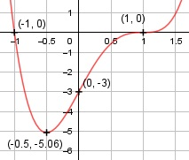

Aufgabe 61 f(x) = 3x4 - 6x3 + 6x - 3 f'(x) = 12x3 - 18x2 + 6, f''(x) = 36x2 - 36x, f'''(x) = 72x - 36 Definitionsbereich: -∞ < x < ∞ Wertebereich: -0,5 ≤ f(x) < ∞ (siehe Extrempunkte) Asymptoten: - Symmetrie: - Nullstellen: 3x4 - 6x3 + 6x - 3 = 0 Durch Probieren gefunden x1 = 1 Hornerschema: 3 -6 0 6 -3 x2 = 1 3 -3 -3 3 --------------------------------- 3 -3 -3 3 0 Polynomdivision: 3xx4 - 6x3 + 6x - 3 : (x - 1) = 3x3-3x2-3x+3 -(3xx4 + 3x3) ------------- -3x3 + 6x - 3 -(-3x3 + 3x2) --------------- -3x2 + 6x - 3 -(-3x2 + 3x) ------------- 3x - 3 -(3x - 3) ----------- 0 Durch Probieren gefunden x2 = 1 Hornerschema: 3 -3 -3 3 x2 = 1 3 0 -3 -------------------------- 3 0 -3 0 Polynomdivision: 3x3 - 3x2 - 3x + 3 : (x - 1) = 3x2 - 3 -(3x3 - 3x2) ------------- -3x + 3 -(-3x + 3) ----------- 0 3x2 - 3 = 0 |+3 3x2 = 3 |:3 x2 = 1|ⱱ x3,4 = ± 1 x1,2,3 = 1 (dreifache Nullstelle, Sattelpunkt) N1,2,3 (1|0), N4(-1|0) Schnittpunkt mit der y-Achse: f(0) = 3 * 0x4 - 6 * 03 + 6 0 - 3 = -3 Sy(0|-3) Extrempunkte: 12x3 - 18x2 + 6 = 0 Hornerschema: 12 -18 0 6 x1 = 1 12 -6 -6 ---------------------------- 12 -6 -6 0 Polynomdivision: 12x3 - 18x2 + 6 : (x - 1) = 12x2 - 6x - 6 -(12x3 - 12x2) --------------- -6x2 + 6 -(-6x2 + 6x) ------------- -6x + 6 -(-6x + 6) ------------ 0 12x2 - 6x - 6 = 0 A, B, C - Formel: A = 12, B = -6, C = -6 x2,3 = x2,3 = x2,3 = 6 ± 18 x2,3 = -------- 24 x2 = 1, f(1) = 0 x3 = -0,5 f(-0,5) = 3 * (-0,5)x4 - 6 * (-0,5)3 + + 6 * (-0,5) - 3 = -5,06 f''(1) = 36 * 12 - 36 * 1 = 0 f''(-0,5) = 36 * (-0,5)3 - 36 * (-0,5) > 0 --> Tiefpunkt (-0,5|-5,06) Wendepunkt: 36x2 - 36x = 0 36x * (x - 1) = 0 36x = 0 | :36 x1 = 0, f(0) = -3 x - 1 = 0 |+1 x2 = 1, f(1) = 0 f'''(0) = 72 * 0 - 36 ≠ 0 --> Wendepunkt (0|-3) f'''(1) = 72 * 1 - 36 ≠ 0, f'(1) = 0, f''(1) = 0 --> Sattelpunkt (1|0) Graph:
